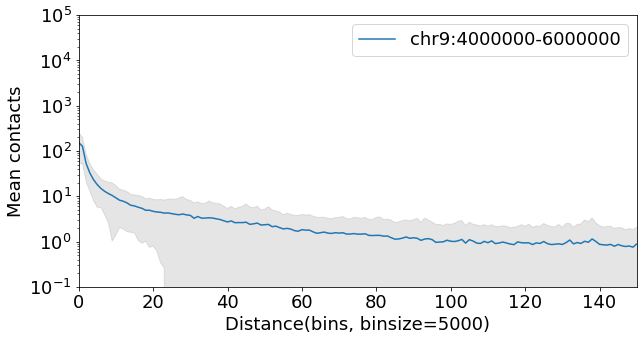

Decay curve¶
.diagonal_mean method in Cool and DotHiC can use for calculate the decay curve from a contact matrix. By using this auxiliary function, it’s easy to produce the decay curve plot within specific region.
[5]:
import coolbox
from coolbox.api import *
[6]:
coolbox.__version__
[6]:
'0.3.0'
Plot a decay curve of chr1 and chr2:
[7]:
import matplotlib.pyplot as plt
plt.rcParams['font.size'] = 18
dot_hic_path = "../../../tests/test_data/dothic_chr9_4000000_6000000.hic"
dhic = DotHiC(dot_hic_path, balance=False)
gr1 = "chr9:4000000-5000000"
gr2 = "chr9:5000000-6000000"
mat1 = dhic.fetch_data(gr1) # any genome region
decay1 = dhic.diagonal_mean(mat1)
mat2 = dhic.fetch_data(gr2)
decay2 = dhic.diagonal_mean(mat2)
binsize = dhic.fetched_binsize
# plot
fig, ax = plt.subplots(figsize=(10, 5))
ax.plot(decay1, label=gr1)
ax.plot(decay2, label=gr2)
plt.yscale('log') # log scale on y-axis
plt.xlabel(f"Distance(bins, binsize={binsize})")
plt.ylabel("Mean contacts")
plt.xlim(0, 150)
plt.ylim(1e-1, 1e5)
plt.legend()
[7]:
<matplotlib.legend.Legend at 0x7fb41b655f70>

Another function .diagonal_mean_std can get the standard error of contacts in the specific contact distance at the same time, we can show it with a error band:
[8]:
import numpy as np
gr = "chr9:4000000-6000000"
mat1 = dhic.fetch_data(gr) # any genome region
decay, std = dhic.diagonal_mean_std(mat1)
# plot
fig, ax = plt.subplots(figsize=(10, 5))
ax.plot(decay, label=gr)
ax.fill_between(np.arange(decay.shape[0]), decay - std, decay + std,
color='gray', alpha=0.2)
plt.yscale('log') # log scale on y-axis
plt.xlabel(f"Distance(bins, binsize={binsize})")
plt.ylabel("Mean contacts")
plt.xlim(0, 150)
plt.ylim(1e-1, 1e5)
plt.legend()
[8]:
<matplotlib.legend.Legend at 0x7fb41d28ecd0>
